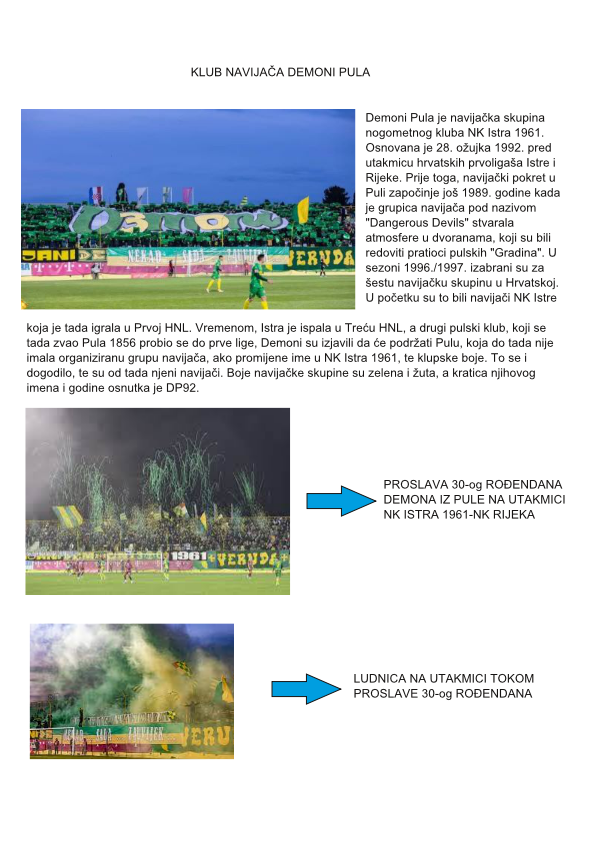

SCRIBUS
Pomoću SCRIBUS programa napravio sam novinski članaka o klubu navijača Demoni Pula. Od svih programa koje sam
koristio u ovom projektu, Scribus je najjednostavniji.
- Prvo sam odabrao Single Page te sam krenuo sa radom
- Ubacio sam naslov KLUB NAVIJAČA DEMONI PULA
- Zatim sam kreirao tekst u novinskom članku te sam ubacio sliku s Proslave 30-og rođendana Demona
- Razdvojio sam tekst u dva dijela, prvi dio sam stavio desno od slike, a drugi ispod kako bi moj rad izgledao
više kao novinski članak
- Nakon toga dodao sam još dvije slike, jednu ispod druge s lijeve strane moje stranice
- Ubacio sam dva oblika strelice, s desne strane dodanih slika, za svaku sliku po jednu strelicu
- Nakon toga dodao sam tekst s desne strane svake strelice te sam opisao o čemu se radi na slici
- Nakon toga exportao sam rad kao sliku te rezultat možete vidjeti odmah u slijedećem koraku
